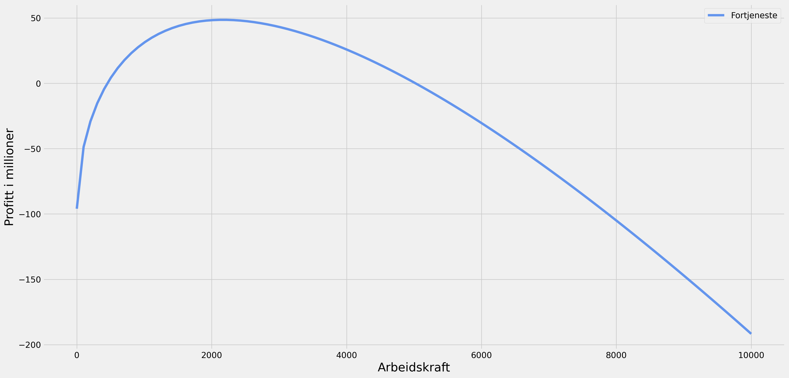
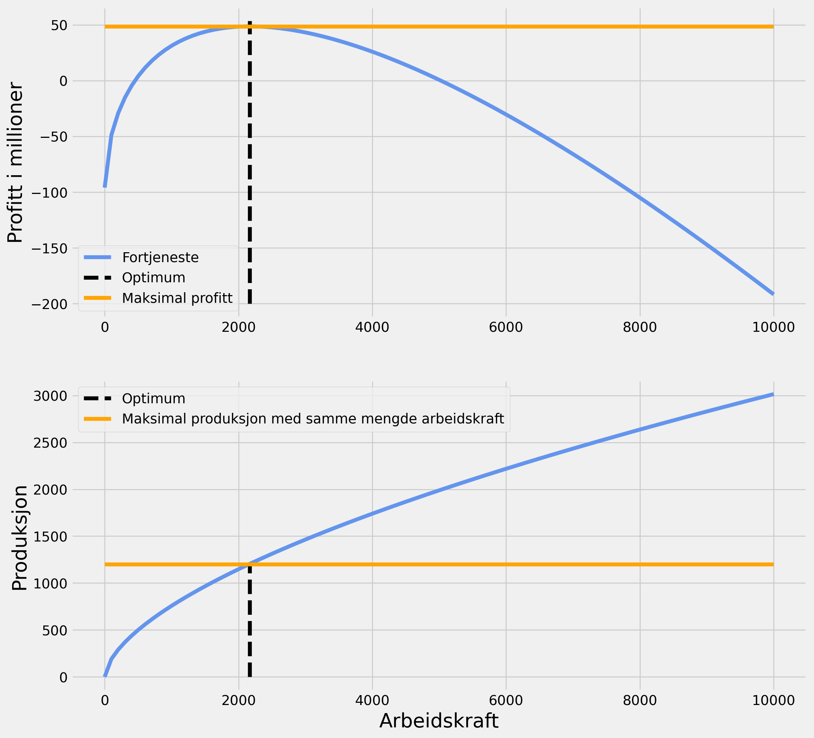

# Importerer pakker
import numpy as np
import sympy as sp
from sympy.solvers import solve
import matplotlib.pyplot as plt
from matplotlib.patches import Ellipse
import matplotlib.style as style
from IPython.display import display, clear_output, Markdown
import eurostat
import pandas as pdMappeoppgave 2 - Python-lab
Fakultet for biovitenskap, fiskeri og økonomi.
For å gå tilbake til hovedsiden trykker du her.
Mappeoppgave 2
Informasjon om oppgaven
Når du besvarer oppgaven, husk: - les oppgaveteksten nøye - kommenter koden din - sett navn på akser og lignende i figurene - skriv hvor du har hentet kodesnutter fra, hvis du gjør det - bruk engelske variabelnavn og vær konsistent med hvordan du bruker store og små bokstaver - bruk mest mulig funksjoner for ting som kan repeteres - En kort kode kan være en bra kode, så ikke gjør det mer komplisert enn det spørres om.
Du kan få full pott uten å svare på oppgaven som er markert “ekstrapoeng”. Du blir likevel belønnet for denne (dvs. hvis du har noen feil og får 45 poeng totalt, så kan du få en høyere poengsum hvis du også har svart på “ekstrapoeng”.
Innlevering av oppgavene
Du skal levere begge mappene samtidig (det vil si denne oppgaven og mappe 1). Innleveringsfristen er 6 desember kl 13:00. Begge oppgavene skal leveres i github (som jupyter-fil) og wiseflow (som PDF). Bruk navnet “SOK-1003-eksamen-2022-mappe2” på filene. - For github: Husk å gi meg (brukernavn “okaars”) tilgang til github-reposetoriet deres. Hvis dere har satt reposetoriet til public (anbefales ikke), må dere dele lenken til dette på ole.k.aars@uit.no - For wiseflow: En person fra hver gruppe (for hver mappeoppgave), leverer inn. Ved innlevering kan du krysse av hvem som er på gruppen din
Se generell informasjon om hvordan man leverer oppgavenher.
NB!: En person fra gruppa må fylle ut dette skjemaet for å melde om hvem som er på gruppa. Dere vil i etterkant motta en epost om tidspunkt for presentasjon.
Presentasjon
Presentasjonen innebærer en kort gjennomgang av oppgaven (10-15 min) etterfulgt av kommentarer fra meg (10-15 min). Alle gruppemedlemmer skal bidra til presentasjonen. Det er anbefalt å laste opp besvarelsen på github forut for presentasjonen (helst to dager før) slik at jeg har mulighet til å lese gjennom. Dere vil ha mulighet til å endre besvarelsen etter presentasjonen, frem til endelig innlevering 6 desember.
Oppgave 1 (10 poeng)
- Vi skal spille et spill der vi kaster en terning 6 ganger. Lag en funksjon med “for-løkke” som printer alle terningene som har blitt kastet. Du kan bruke
np.random.randint()til å lage tilfeldige tall
def dice (): #Lager en funksjon som heter dice
for dice in range(6):
#Lager en for-løkke som gjør at det som blir puttet inn i funksjonen blir returnert 6 ganger
dice = np.random.randint(1, 7)
#Lager en variabel som heter dice som er lik et tilfeldig tall mellom 1 og 7
print("\nTerningen din rullet:", dice) #Printer ut hva terningen din rullet
dice() #Kaller på funksjonen dice
Terningen din rullet: 6
Terningen din rullet: 6
Terningen din rullet: 4
Terningen din rullet: 4
Terningen din rullet: 6
Terningen din rullet: 1- Juster den samme funksjonen slik at den lagrer tallene i en liste før den printer ut selve listen. Dere kan kalle denne listen for
lot_numbers. Dere kan vurdere å brukeappend()som del av funksjonen.
def dice(): #Lager en funksjon som heter dice
lot_numbers = [] #Lager en tom liste som heter lot_numbers
for dice in range (6):
#Lager en for-løkke som gjør at det som blir puttet inn i funksjonen blir returnert 6 ganger
dice = np.random.randint(1,7) #Lager en variabel som heter dice som er lik et tilfeldig tall mellom 1 og 7
lot_numbers.append(dice) #Legger til det som blir returnert i funksjonen i listen lot_numbers
print( "\nTerningen din rullet: ", lot_numbers) #Printer ut hva terningen din rullet
dice() #Kaller på funksjonen dice
Terningen din rullet: [5, 1, 5, 5, 2, 6]- Juster den samme funksjonen slik at den har to argument. Disse argumentene er to terningverdier som du “tipper” blir kastet. Bruk
if,elseogeliftil å generere vinnertall. Resultatet fra funksjonen skal printe ut ulike setninger avhengig av om man får 0, 1 eller 2 rette. Setningene velger du selv, men de skal inneholde tallene som du tippet, og tallene som ble trukket.
def guessing_game(nr1, nr2):
#Lager en funksjon som heter guessing_game som tar inn to argumenter
guess_1 = False
#Lager en variabel som heter guess_1 som er lik False
guess_2 = False
#Lager en variabel som heter guess_2 som er lik False
lot_numbers = []
#Lager en tom liste som heter lot_numbers
for dice in range(1,7):
#Lager en for-løkke som gjør at det som blir puttet inn i funksjonen blir returnert 6 ganger
nr = np.random.randint(1,7)
#Lager en variabel som heter nr som er lik et tilfeldig tall mellom 1 og 7
lot_numbers.append(nr)
#Legger til det som blir returnert i funksjonen i listen lot_numbers
if nr == nr1:
#Lager en if-setning som sier at hvis nr er lik nr1 skal guess_1 bli lik True
guess_1 = True
#Lager en variabel som heter guess_1 som er lik True
if nr == nr2:
#Lager en if-setning som sier at hvis nr er lik nr2 skal guess_2 bli lik True
guess_2 = True #Lager en variabel som heter guess_2 som er lik True
print(f"all numbers were{lot_numbers}!") #Printer ut hva terningen din rullet
if guess_1 and guess_2:
#Lager en if-setning som sier at hvis guess_1 og guess_2 er lik True skal det printes ut at du vant
print(f"WINNERWINNERCHICKENDINNER!lucky numbers are {nr1} and {nr2}") #printer ut at du vant
elif guess_1: #Lager en elif-setning som sier at hvis guess_1 er lik True skal det printes ut at du vant
print(f"your first guess was {nr1} you guessed correct! you shall pass!!!") #Printer ut at du vant
elif guess_2: #Lager en elif-setning som sier at hvis guess_2 er lik True skal det printes ut at du vant
print(f"your secound guess was {nr2} you guessed correct! you shall pass!!!") #Printer ut at du vant
else : #Lager en else-setning som sier at hvis guess_1 og guess_2 er lik False skal det printes ut at du tapte
print(f"you guessed {nr1} and {nr2} ! YOU FAILED!") #Printer ut at du tapte
guessing_game(1,6) #Kaller på funksjonen guessing_game med argumentene 1 og 6all numbers were[1, 2, 5, 4, 1, 6]!
WINNERWINNERCHICKENDINNER!lucky numbers are 1 and 6Oppgave 2 (10 poeng)
- Du har nå begynt å spille lotto i stedet, og satser alt på ett vinnertall. Lag en while-løkke som printer ut tall helt til du har trukket riktig tall (som du definerer selv). For enkelthets skyld kan du begrense utfallsrommet av trekningene til mellom 0-30.
def lotto(x):
#Lager en funksjon som heter lotto som tar inn et argument
num = [] #Lager en tom liste som heter num
while x not in num:
#Lager en while-løkke som sier at så lenge x ikke er i num skal det kjøres
nr = np.random.randint(1,30)
#Lager en variabel som heter nr som er lik et tilfeldig tall mellom 1 og 30
num.append(nr)
#Legger til det som blir returnert i funksjonen i listen num
print(f" Trekning av tall ", num) #Printer ut hva terningen din rullet
print(f" Totalt tok det {len(num)} trekninger å treffe vinnertallet")
#Printer ut hvor mange ganger det tok å treffe vinnertallet
lotto(7) #Kaller på funksjonen lotto med argumentet 7 som vinnertall Trekning av tall [24, 8, 9, 14, 13, 11, 8, 5, 29, 7]
Totalt tok det 10 trekninger å treffe vinnertallet- Lag et plot av den while-løkken du nettopp lagde. Man blir belønnet om man;
- bruker
scatter; - lager plottet dynamisk (dvs at hver trekning vises hver for seg, og at x-aksen endrer seg etter en gitt verdi);
- viser hvor når siste trekningen blir gjort (dvs at den vises kun når du har trukket vinnertallet).
Avhengig av hvordan du lager figuren din kan du får bruk for å importere pakkene Ellipse, display, clear_output.
fig, ax = plt.subplots(figsize=(25,10))
#Starter figuren, setter størrelse
style.use("fivethirtyeight")
#Setter standard stil for figurene videre
x,y,lotto=0,7,0
#definerer x som 0, y som er vinnertallet som 7, og lotto som 0
ypath=[] #definerer tom liste
xpath=[] #definerer tom liste
while y not in ypath:
#while loop som kjører så lenge vinnertallet ikke er i listen ypath
x= x+1 #legger til sånn at hver trekning går 1 på x-aksen
lotto= np.random.randint(1,30)
#Velger å ikke trekke fra 0 siden det ikke er mange lottotrekninger med tallet 0 i seg.
ypath.append(lotto) #legger til lotto i listen ypath
xpath.append(x) #legger til x i listen xpath
ax.scatter(xpath,ypath, color="red",label="Lotto", s= 120)
#Plotter xpath og ypath som røde prikker
ax.legend(loc="upper right",frameon=True,fontsize=50)
#Legger til legend
ax.text(x,lotto,f'Tallet trukket er {np.round(lotto,1)}')
# Legger til en bemerkning på hvilket tall som blir trukket
display(fig) #viser figuren
ax.cla() #clearer figuren
ax.set_ylim([0,30]) #setter y-aksen fra 0 til 30
ax.set_yticks(np.arange(0,31,2)) #setter y-aksen fra 0-30
ax.set_xticks(np.arange(0,100,1)) #setter så aksen går til 100
plt.pause(0.5) #setter pause til 0.5 sekunder
clear_output(wait=True) #clearer output- Ekstrapoeng: gjør det samme som i (b), men lag et histogram som vises ved siden av. Dette histogrammet skal vise hvor mange ganger de ulike tallene ble trekt. Bruk
plt.histtil dette. Husk at du må definere figur og akseobjekt først.
fig, (ax1, ax2)= plt.subplots(1, 2, figsize=(21,7))
#legger til to grafer og velger størrelse
x,y,lotto=0,7,0 #Definerer x som 0, lotto som 0 og VINNERTALLET 7 som y.
ypath=[] #definerer tom liste
xpath=[] #definerer tom liste
while y not in ypath:
#while loop som kjører så lenge y(vinnertallet) ikke er i listen ypath
x = x+1 #legger til x+1 i x for å bruke i append
lotto= np.random.randint(1,30)
#Velger starte å trekke fra 1 til 29
ypath.append(lotto)
#legger til lotto i listen ypath
xpath.append(x)
#legger til x i listen xpath
ax1.scatter(xpath,ypath, color="red",label="Lotto", s= 40)
#legger til scatterplot med rød farge og størrelse 40
ax1.legend(loc="upper right",frameon=True,fontsize=15)
#legger til legend
ax2.hist(ypath, color="red",bins=60)
#legger til histogram med rød farge og 60 bins
ax1.text(x-0.4 ,lotto+0.5,f'Tallet er {np.round(lotto,1)}')
#Legger til en tekst på hvilket tall som blir trukket
display(fig)
#viser grafen
ax1.cla()
#clearer grafen
ax1.set_ylim([0,30])
#setter y-aksen til å være mellom 0 og 30
ax2.set_ylim([0,10])
#setter y-aksen til å være mellom 0 og 10
ax2.set_xlim([0,30])
#setter x-aksen til å være mellom 0 og 30
ax1.set_xticks(np.arange(0,100,1))
#legger til punkter i x-aksen fra 0 til 1000 med intervall 1
ax2.set_xticks(np.arange(1,30,1))
#legger til punkter i x-aksen fra 1 til 30 med intervall 1
ax1.set_yticks(np.arange(0,30,2))
ax1.set_xlabel("Antall trekninger",fontsize=15)
#legger til x label
ax1.set_ylabel("Tall trukket",fontsize=15)
#legger til y label
ax2.set_xlabel("Tall trukket",fontsize=15)
#legger til x label
ax2.set_ylabel("Antall ganger trukket av hvert tall",fontsize=10)
#legger til y label
print(f"Trekning nummer {len(ypath)}")
#I tilfelle trekningen går for langt så ikke tallene blir synlig på x-aksen
plt.pause(0.1)
#setter pause mellom hver iterasjon
clear_output(wait=True)
#clearer outputTrekning nummer 15Oppgave 3 (20 poeng)
En bedrift produserer biler. Produktfunksjonen til bedriften defineres slik \(f(L, a, R) = 2RL^{a}\), hvor: - L er arbeidskraft, - a er produktiviteten til arbeiderne og - R er antall robotmaskiner
- Lag en formel for produktfunksjonen til bedriften og plot den grafisk med ulike verdier av
Lpå x-aksen. Antaa=0.6ogR=2
fig, ax2 = plt.subplots(figsize=(20, 10))
#legger til graf og velger størrelse
a=0.6
#definerer variabelen a
R=2
#definerer variabelen R
L = np.linspace(0,10000,10)
#definerer variabelen L som en liste med tall mellom 0 og 10000 med intervall 10
def f(L,a,R):
#definerer funksjonen f
return 2*R*L**a
#returnerer 2*R*L**a
plt.plot(L, f(L,a,R), 'cornflowerblue')
#legger til plot med cornflowerblue farge
plt.xlabel('Arbeidskraft', size="20") # benevner x akse
plt.ylabel('Produksjon', size="20") # benevner y akse
plt.show();
#viser grafen- anta at profittfunksjonen til denne bedriften er \({profit = f(L, a, R)p-wL-cR-K}\), hvor
wer månedslønnen til arbeiderne,cer kostnaden for robotmaskineneKer faste kostnaderper utsalgsprisen på bilene.
Anta a=0.6,R=6, p=300 000, w=100 000, c= 1 000 000 og K=90 000 000. Plot profittfunksjonen figurativt for antall arbeidere (L) mellom 0 og 10 000. Vis profitten i millioner (dvs at du må dele på 1 000 000)
fig2, ax5 = plt.subplots(figsize=(20,10))
#legger til graf og velger størrelse
R = 6
#definerer variabelen R som er antall robotmaskiner
p = 300000
#definerer variabelen p som er utsalgsprisene på bilene
w = 100000
#definerer variabelen w som er månedslønnen til arbeiderne
c = 1000000
#definerer variabelen c som er kostnaden for robotmaskinene.
K = 90000000
#definerer variabelen K som er faste kostnader
L = np.linspace(0,10000,100)
#definerer variabelen L som en liste med tall mellom 0 og 10000 med intervall 100
def profitt(L,a,R,p,w,c,K):
#definerer funksjonen profitt
return (f(L,a,R)*p - w*L - c*R - K)
#returnerer (f(L,a,R)*p - w*L - c)*K
T= profitt(L,a,R,p,w,c,K)/1000000
# definerer T som en variabel av funksjonen og bruker den for å plotte
# deler på 1 million for å vise profitt i millioner
ax5.plot(L, T, 'cornflowerblue', label="Fortjeneste")
#legger til plot med cornflowerblue farge
ax5.set_ylabel("Profitt i millioner", size="20")
# Legger til benevning av y aksen, skifter størrelse
ax5.set_xlabel("Arbeidskraft", size="20")
# Legger til benevning ax x aksen, endrer størrelse
ax5.legend(); # Legende for label
- Plot profitttfunksjonen for antall robostmaskiner
R=[3, 6, 9]i samme plot (dvs at tre profittfunksjoner vises sammen). Bruk av “for loops” for å gjøre dette belønnes
R = [3,6,9] #definerer variabelen R som en liste med tallene 3,6 og 9
for i in R:
#for loop som kjører for alle tallene i listen R
plt.plot(L, profitt(L,a,i,p,w,c,K)/1000000, label='R = {}'.format(i))
#legger til plot med label som er lik R = i
plt.legend() #legger til legend
plt.xlabel("Arbeidskraft") # Benevner x aksen
plt.ylabel("Profitt i millioner") # Benevner y aksen
plt.show();- finn profittmaksimum og optimal antall arbeidere ved hjelp av derivasjon med samme forutsetninger som i (1b). Bruk
sympy-pakken til dette
R = 6
#definerer variabelen R, forutsetningene ellers skal være som 3b
L,a,R,p,w,c,K=sp.symbols("L a R p w c K")
#definerer variabelene L,a,R,p,w,c,K som symboler
profitt(L,a,R,p,w,c,K)
#kaller på funksjonen profitt\(\displaystyle - K - L w + 2 L^{a} R p - R c\)
d_profitt=sp.diff(profitt(L,a,R,p,w,c,K),L)
#definerer variabelen d_profitt som derivert av profitt med hensyn på L
foc=sp.Eq(d_profitt,0)
#definerer variabelen foc som likning mellom d_profitt og 0
L_max=solve(foc,L)[0]
#definerer variabelen L_max som løsning til foc
profit_max=profitt(L_max,a,R,p,w,c,K)
#definerer variabelen profit_max som profitt med L=L_max# a=0.6,R=6, p=300 000, w=100 000, c= 1 000 000 og K=90 000 000
num_dict={a:0.6,R:6,p:300000,w:100000,c:1000000,K:90000000}
#definerer variabelen num_dict som en dictionary med tallene som er gitt i oppgaven
num_dict[L]=L_max.subs(num_dict)
print(f" Optimal antall arbeidere er {L_max.subs(num_dict)}")
#printer ut optimal antall arbeidere Optimal antall arbeidere er 2168.37493200784profit_max_num=float(profitt(L,a,R,p,w,c,K).subs(num_dict))
#definerer variabelen profit_max_num som profitt med L=L_max og tallene fra num_dict
print(f" Maksimum profitt er {profit_max_num}")
#printer ut maksimum profitt Maksimum profitt er 48558328.800522506# Markdown som er brukt fra sympy forelesning.
tbl=f"""
| | Desimalverdi | Analytisk verdi |
| :-------------------------------| :----------------------------------------| :-----------------------------|
| Optimal mengde arbeidskraft: | ${np.round(float(num_dict[L]),1)}$ |${sp.latex(L_max)}$ |
| Maksimal profitt | ${np.round(float(profit_max_num),1)}$ |${sp.latex(profit_max)}$ |
"""
display(Markdown(tbl))| Desimalverdi | Analytisk verdi | |
|---|---|---|
| Optimal mengde arbeidskraft: | \(2168.4\) | \(\left(\frac{2 R a p}{w}\right)^{- \frac{1}{a - 1}}\) |
| Maksimal profitt | \(48558328.8\) | \(- K - R c + 2 R p \left(\left(\frac{2 R a p}{w}\right)^{- \frac{1}{a - 1}}\right)^{a} - w \left(\frac{2 R a p}{w}\right)^{- \frac{1}{a - 1}}\) |
- vis figurativt med bruk av
fill_betweenarealet hvor man taper penger (i rødt) og hvor man tjener penger (i grønt). Marker også profittmaksimum og antall arbeidere i profittmaksimum - gjerne ved bruk avvlines. Bruk ellers samme forutsetninger for argumentene som i oppgave (1b)
ax5.vlines(float(num_dict[L]), -200, profit_max_num*1.1/1000000, color='black',
linestyles='dashed', label="Optimum")
# Legger til en vlines som viser optimal arbeidskraft og profitt
ax5.hlines(y=profit_max_num/1000000, xmin=0, xmax=10000, color='orange',
label='Maksimal profitt') #Legger til profitt maksimum
x = np.linspace(0,10000, 1000) # definerer x-aksen
y = 0*x # definerer y-aksen
R = 6 #definerer variabelen R som er antall robotmaskiner
p = 300000 #definerer variabelen p som er utsalgsprisene på bilene
w = 100000 #definerer variabelen w som er månedslønnen til arbeiderne
c = 1000000 #definerer variabelen c som er kostnaden for robotmaskinene.
K = 90000000 #definerer variabelen K som er faste kostnader
a = 0.6 #definerer arbeidskraft
T = profitt(x,a,R,p,w,c,K)/1000000
#definerer funksjonen som T, og må generelt lage disse variablene
# på nytt siden de var lagret som symboler over for sympy
ax5.fill_between(x, y, T, where=T>=y, facecolor='green',
alpha=0.5, label="Fortjeneste") # Fill for fortjeneste
ax5.fill_between(x, y, T, where=T<=y, facecolor='red',
alpha=0.5, label="Tap") # Fill for tap
ax5.legend() # Legende for labels
fig2 # Henter fig2 fra tidligerefig3, (ax5, ax2) = plt.subplots(2, figsize=(12,12))
# Lager to figurer over hverandre, og endrer størrelsen.
L = np.linspace(0,10000,100)
#definerer variabelen L som en liste med tall mellom 0 og 10000 med intervall 100
# trenger dette for å få ax2 figuren til å kjøre
T = profitt(L,a,R,p,w,c,K)/1000000
#Definerer funksjonen T igjen
ax5.plot(L, T, 'cornflowerblue', label="Fortjeneste")
#legger til plot med cornflowerblue farge og label
ax5.vlines(2168, -200, profit_max_num*1.1/1000000, colors=['black'],
linestyles='dashed', label="Optimum")
# Legger til en vlines som viser optimal arbeidskraft og profitt
# kan ikke bruke dict her pga at L er definert som noe annet
ax5.hlines(y=profit_max_num/1000000, xmin=0, xmax=10000,
color='orange', label='Maksimal profitt')
#Legger til profitt maksimum
ax5.legend(loc="lower left") # Legende
ax5.set_ylabel("Profitt i millioner", size="20")
ax2.plot(L, f(L,a,R), 'cornflowerblue')
#legger til plot med cornflowerblue farge og marker i form av en sirkel
ax2.set_ylabel("Produksjon", size="20")
ax2.set_xlabel("Arbeidskraft", size="20")
ax2.vlines(2168, 0, 1200, colors=['black'], linestyles='dashed', label="Optimum")
# Legger til en vlines som viser optimal arbeidskraft og profitt,
# den ville ikke ta dict variablen fordi den er definert som linspace
ax2.hlines(y=1200, xmin=0, xmax=10000, color='orange',
label='Maksimal produksjon med samme mengde arbeidskraft')
#Legger til profitt maksimum, hardkodet
ax2.legend(loc= "upper left")
plt.show()
Oppgave 4 (10 poeng)
I denne oppgaven skal vi hente ut et datasett fra eurostat på investeringer i hosholdningen. Bruk koden under til å hente ut dataene.
NB!: Husk at dere må ha innstallert pakken eurostat. Dette gjør dere med å åpne “Terminal” og kjøre pip install eurostat.
inv_data = eurostat.get_data_df('teina510')inv_data.columns = ['freq', 'unit', 'sector',
'na_item', 'country']+ list(range(2010, 2022)) #v2
# Fjerner kollonene freq, unit, sector og na_item
inv_country = inv_data.drop(inv_data.columns[[0,1,2,3]],axis = 1)
# Fjerner verdier som sier NaN
inv_country = inv_country.dropna()
# Setter country som index
inv_country= inv_country.set_index("country")- Lag et nytt datasett hvor du kun har med de nordiske landene (dvs. “NO”, “SE”, “DK”, “FI”). Det kan være nyttig å bruke
isintil dette. Bytt så om på kolonner og rader ved hjelp avtranspose.
# Bruker isin til å lage en bool som sier at i indexen så er NO, SE, DK og FI:
# True mens alle andre landkoder er False
nordic_country=inv_country.index.isin(["NO","SE","DK","FI"])
# Trekker ut alle True observasjoner(nordiske land)
# fra index til et nytt datasett, kaller dette inv_nordic
inv_nordic= inv_country[nordic_country==True]
# Bruker transpose til å gjøre om datasettet slik at
# årstallene går inn i index radene og landkodene går i kolonnene
inv_nordic=inv_nordic.transpose()
inv_nordic| country | DK | FI | SE | DK | FI | SE |
|---|---|---|---|---|---|---|
| 2010 | 8.87 | 12.78 | 6.83 | 8.68 | 12.33 | 6.64 |
| 2011 | 9.21 | 12.46 | 6.41 | 9.03 | 11.87 | 6.30 |
| 2012 | 10.77 | 11.35 | 6.36 | 10.10 | 11.55 | 6.47 |
| 2013 | 9.77 | 10.97 | 6.26 | 11.12 | 11.72 | 6.58 |
| 2014 | 10.60 | 12.27 | 6.96 | 10.20 | 11.90 | 6.66 |
| 2015 | 9.95 | 12.76 | 7.05 | 9.78 | 12.05 | 6.89 |
| 2016 | 10.10 | 12.13 | 7.06 | 9.47 | 12.55 | 7.20 |
| 2017 | 9.52 | 12.29 | 6.78 | 10.70 | 12.84 | 7.26 |
| 2018 | 10.69 | 12.80 | 8.18 | 10.35 | 12.54 | 7.74 |
| 2019 | 10.33 | 13.51 | 7.71 | 10.15 | 12.60 | 7.48 |
| 2020 | 10.60 | 11.51 | 6.87 | 9.94 | 12.23 | 7.03 |
| 2021 | 7.84 | 11.20 | 6.18 | 8.83 | 11.93 | 6.70 |
- Lag en ny kolonne som du kaller “mean”. Denne skal være gjennomsnittet av alle de nordiske landene for hvert av årene (dvs at du må ta gjennomsnittet over radene). Plot så dette og kall y-aksen for “investering”
# Lager en ny kollonne som heter mean, gir den
# verdiene til gjennomsnittet over radene til de nordiske landene
inv_nordic["mean"] = inv_nordic.mean(axis=1)
print(inv_nordic)
# Plotter grafen, kaller y-aksen for investment
ax3 = inv_nordic.plot(ylabel='investment')
# Kode hentet fra
# https://matplotlib.org/stable/tutorials/intermediate/legend_guide.html
ax3.legend(bbox_to_anchor=(1, 1),
loc='upper left', borderaxespad=0.);country DK FI SE DK FI SE mean
2010 8.87 12.78 6.83 8.68 12.33 6.64 9.355000
2011 9.21 12.46 6.41 9.03 11.87 6.30 9.213333
2012 10.77 11.35 6.36 10.10 11.55 6.47 9.433333
2013 9.77 10.97 6.26 11.12 11.72 6.58 9.403333
2014 10.60 12.27 6.96 10.20 11.90 6.66 9.765000
2015 9.95 12.76 7.05 9.78 12.05 6.89 9.746667
2016 10.10 12.13 7.06 9.47 12.55 7.20 9.751667
2017 9.52 12.29 6.78 10.70 12.84 7.26 9.898333
2018 10.69 12.80 8.18 10.35 12.54 7.74 10.383333
2019 10.33 13.51 7.71 10.15 12.60 7.48 10.296667
2020 10.60 11.51 6.87 9.94 12.23 7.03 9.696667
2021 7.84 11.20 6.18 8.83 11.93 6.70 8.780000
inv_nordic['mean'] = inv_nordic.mean(axis=1)
#legger til en kollonne med gjennomsnittet av radene
plt.plot(inv_nordic['mean'], label='Nordic mean')
#plotter gjennomsnittet
legend = plt.legend(loc='upper left', fontsize='medium');
#legger til en legendFor å gå tilbake til hovedsiden trykker du her.